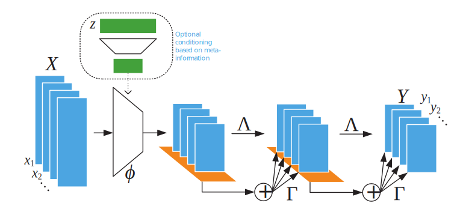
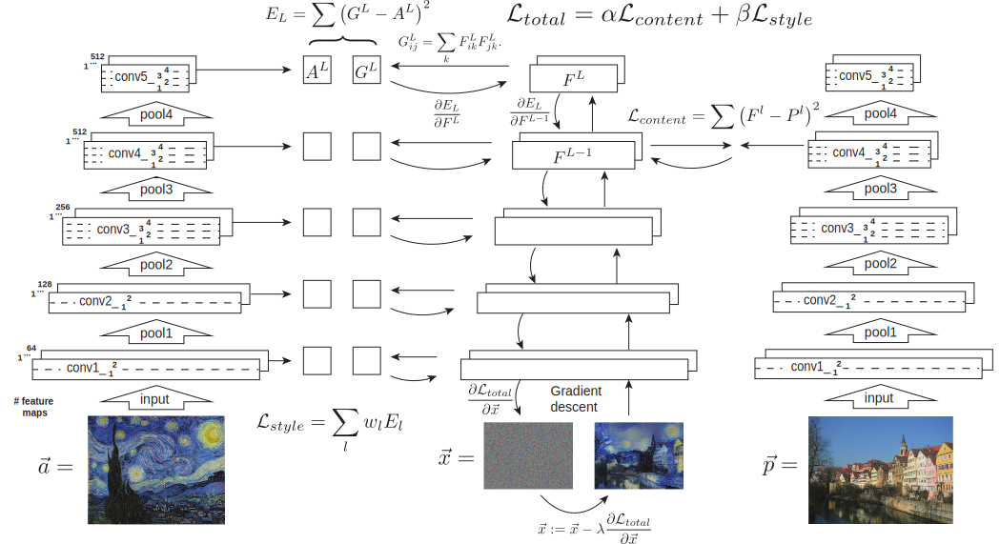
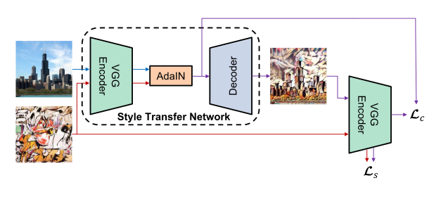
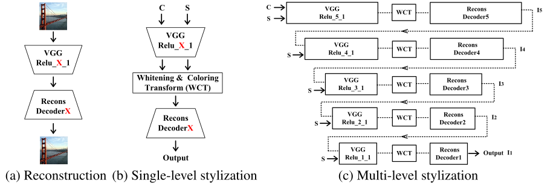
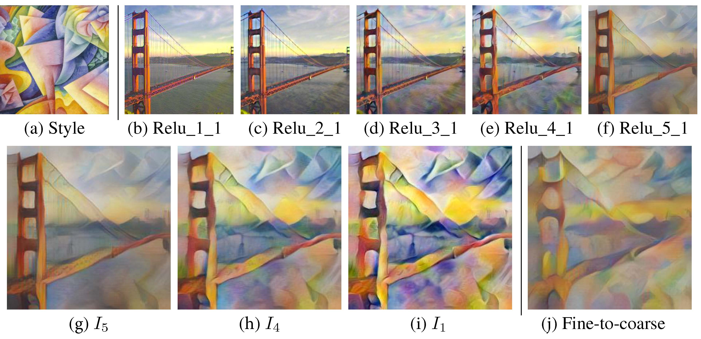
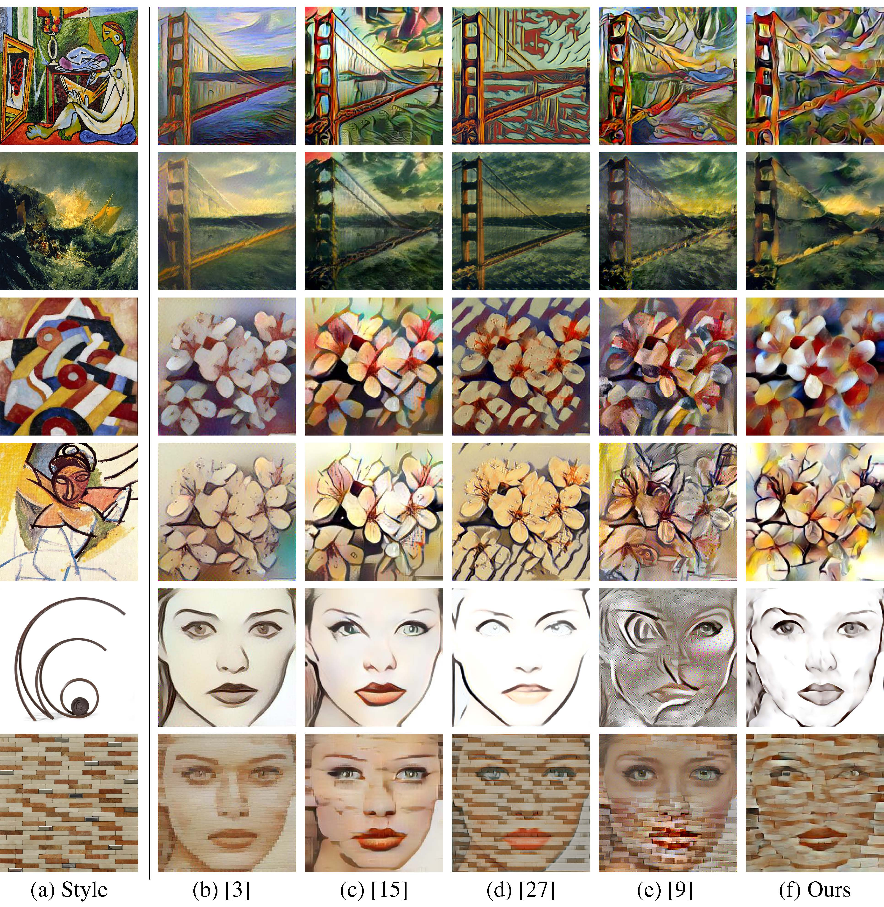
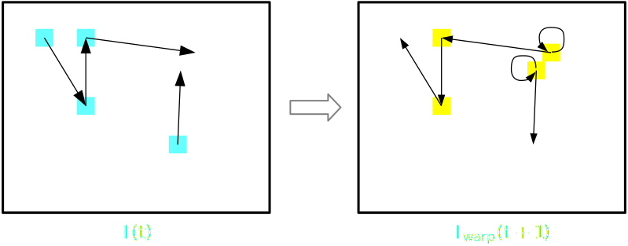
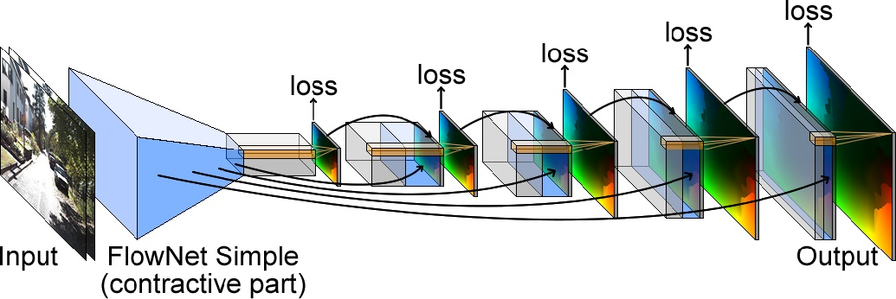
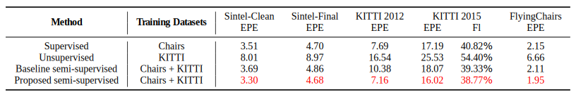
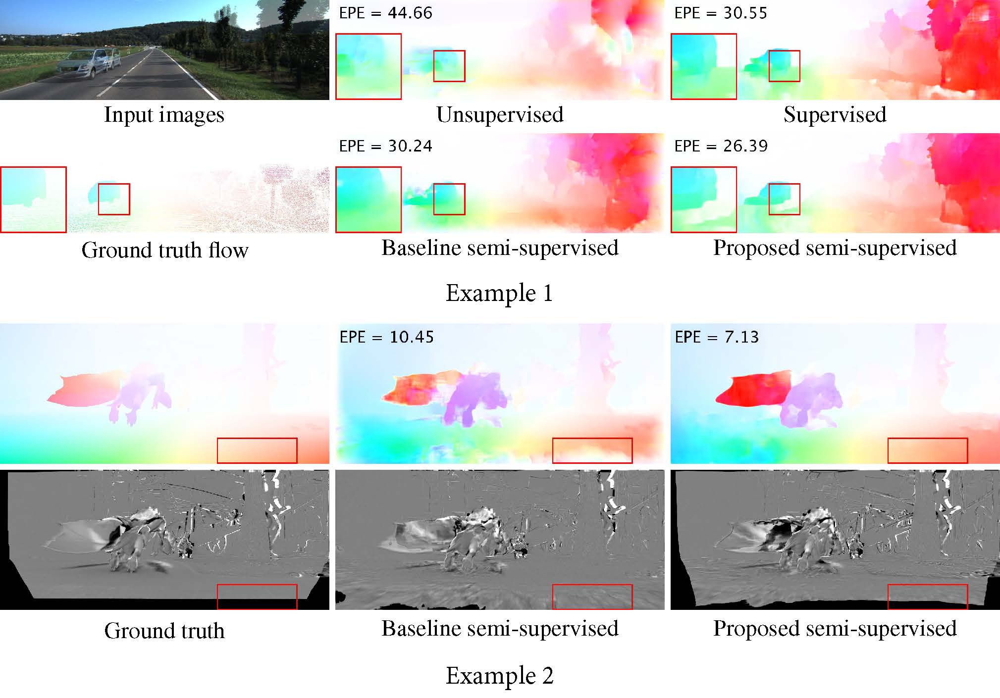

Notes on May 26, 2018
| Date: | May 26, 2018 |
|---|---|
| Last Updated: | Jun 4, 2018 |
| Categories: | |
| Tags: |

Contents
Set-invariant network
Check here to see the article Deep Sets:
Theory
This article discusses about how to build a neural network with order-invariant input set.
Theorem 1: which function could be set invariant:
Such a function $f(\mathbb{X})$ need to be able to be decomposed as such a form:\begin{align} f(\mathbb{X}) = \rho(\sum\limits_{x \in \mathbb{X}} \phi(x)). \end{align}
Since the general form of the layer of neural network is $F(\mathbf{x},~\boldsymbol{\Theta}) = \sigma (\boldsymbol{\Theta}\mathbf{x})$, we could know that according to the above theorem, only when
where $\mathbf{1} = [1,~1,~1,~\ldots,~1]^T$.
The whole network could be described as stacked layers as below. Each layer is set-invariant.
| Network Structure |
|---|
|  |
The final revised network layer could be formulated as
$\eqref{fml:sec1:final}$ shows that the trainable parameters are just $\boldsymbol{\Gamma}$ and $\boldsymbol{\beta}$. Denote the input $\mathbf{x}$ is a $K \times M$ matrix which has $K$ samples and output is a $K \times N$ matrix. Then we know that $\boldsymbol{\beta}$ is a bias variable which satisfies $\boldsymbol{\beta} \in \mathbb{R}^{N}$. $\boldsymbol{\Gamma}$ should be a trainable kernel which satisfies $\boldsymbol{\Gamma} \in \mathbb{R}^{M \times N}$. Note that $\boldsymbol{\Gamma}$ needs to be a diagonal matrix.
Extension
Check here to see de Finetti's theorem in Wikipedia.
In fact, I could not understand this part well. But I could give an explanation about how to derive the solution of this part. It is based on de Finetti ’s theorem:
$de~Finetti$’s Theorem: which function could be set invariant:
An exchangeable model $p(\mathbb{X})$ need to satisfy the exchangeable distribution as\begin{align} p(\mathbb{X} | \alpha) = \int \left[ \prod_{m=1}^{M} p(x_m | \theta) \right] p(\theta | \alpha) \mathrm{d} \theta . \end{align}
In this application, we know that:
We use $\langle \cdot \rangle$ to represent the inner product. Due to the exchangeability of the inner product, we could rewrite the model formula as:
Results
Here we show the results. Green means labels that exist but do not appear in ground truth. Brown means that labels appearing in ground truth. Red means wrong prediction. We could know that the results are order-invariant.
| Results |
|---|
 |
Style Transfer
Check here to see the article Universal Style Transfer via Feature Transforms:
Theory
The basic idea is that the correlation (i.e. the Gramian matrix or covariance matrix) between features extracted by deep network could be used to describe the visual style of images. Along this idea, there are 3 models aiming to the same work. In the following part, we would discuss about them respectively.
Previous work: Gramian optimization
This is a previous work. Check here to see the article Image Style Transfer Using Convolutional Neural Networks:
Defining the output of a convolutional network layer as $\mathcal{F}^{(l)}(\mathbf{x})$ where $l$ represents the number of the layer and $\mathbf{x}$ represents the input image. Then the reconstruction process could be defined as
where $\mathbf{x}_0$ is the ground truth, i.e. the image that needs to be reconstructed. We use a white noise image $\boldsymbol{\theta}$ as the input, and optimize it so that it could match the output feature of $\mathbf{x}_0$. Here we call $\eqref{fml:sec2:reconst-cont}$ as the Content Reconstruction.
Check here to see Gramian matrix in Wikipedia.
We use Gramian matrix to describe the style of a image. Denote $\mathcal{G}^{(l)}$ as the Gramian matrix calculated by $\mathcal{F}^{(l)}$, we have the definition as
Gramian matrix is invariable with the location where the element (pixel) exists, so it could integrate the style of the image and omit the content features. Then we would get the idea that such optimization could be used to make the style reconstruction:
Then we could use the following figure to show the whole architecture of this work. In this work, the network has been pre-trained for object detection (or other purpose) and all of its parameters are fixed. We input a content image $\mathbf{x}_c$ and a style image $\mathbf{x}_s$. The style transformation is realized by optimizing the conjugated reconstruction loss $\mathcal{L}$.
| Gramian Optimization Architecture |
|---|
|  |
Denote $\boldsymbol{\theta}$ as another input image which needs to be optimized for reconstruction. The $\mathcal{L}$ is defined by two parts:
where $\mathcal{L}_c$ is the content loss which is defined as
where we only use the $L^{\mathrm{th}}$ layer to optimize the content features.
And $\mathcal{L}_s$ is the style loss which is defined by mixing style features from all layers:
where we use $w_l$ to define weights of features from each layer. The weights $w_l$ could be pre-defined and fixed during the optimization.
The final optimization target could be described as reconstructing an image with the content of $\mathbf{x}_c$ and style of $\mathbf{x}_s$.
$\eqref{fml:sec2:final}$ requires us to input an initialized image $\boldsymbol{\theta}$ and optimize the conjugated loss over it. The input image could be a white noise image, the content image or the style image. The author performs the experiments and show that the input would not influence the results greatly.
Previous work: Instance normalization
This is also a previous work. Check here to see the article Arbitrary Style Transfer in Real-time with Adaptive Instance Normalization:
This work is based on modifying instance normalization (IN). We know that the original form of the IN is
where $\gamma$ and $\beta$ are trainable. They are used as scaling factor. Since $\eqref{fml:sec3:in}$ is performed on each instance, we know that if $\mathbf{x}$ is group of $C$ channel images, i.e. a $N \times H \times W \times C$ tensor where $N$ represents the sample number, $H$ is the height, $W$ is the width and $C$ is the channel number, both $\gamma$ and $\beta$ have a size of $N \times C$. The $\mu(\cdot)$ and $\sigma(\cdot)$ are mean function and standard deviation (std) function respectively. Both of the two functions are performed on each channel and each sample individually.
The author think that the style of the image locates in mean and std values. So assuming that we have a content image $\mathbf{x}_c$ and a style image $\mathbf{x}_s$, the IN is modified as
which means we use the mean and std of the style image to replace the the same parameters of the content image. To some extent, if we perform $\hat{\mathrm{IN}}$ on original image, there would not be some significant change. However, in this work it is performed in compressed feature space.
| Instance Normalization Architecture |
|---|
|  |
In this figure, we know the basic architecture is auto-encoder. Both the $\mathbf{x}_c$ and $\mathbf{x}_s$ are feed into the encoder. Then in the feature space, the mean and std of the features of $\mathbf{x}_c$ are replaced by that of the features of $\mathbf{x}_s$. Then the changed features are feed into the decoder which would reconstruct a style-transferred image.
Note that we use a pre-trained VGG auto-encoder network, but the parameters of the encoder are fixed. We only train the decoder (whose parameters are denoted as $\boldsymbol{\Theta}_D$) so that it would not only reconstruct the content but also take the style into consideration. The conjugated loss function $\mathcal{L}$ is
We use $E$ to represent the encoder (which is fixed) and $D$ (with parameters as $\boldsymbol{\Theta}_D$) to represent the decoder (which needs to be trained). First we use $\hat{\mathbf{y}}_c$ to represents the adjusted features of $\mathbf{x}_c$,
This part is calculated directly and would not be influenced by training. Then we could define the first part of the loss, i.e. the content loss as
Here we match the features rather than the image because we do not have a image that could be matched. This idea is just like inverse the order of the auto-encoder but the coherence of the encoder and the decoder would not be damaged.
The style loss could be given by Gramian loss, but the author prefers to use the mean and the std.
where we use $E^{(l)}$ to represent the output features of the $l^{\mathrm{th}}$ layer of the VGG encoder network. In fact, we do not need to use all layers’ outputs but just need to select several layers.
The final optimization could be formulated as
After training, we could get the testing results as
This work: Whitening Transformation
In this paper, the author propose two improvements compared to the second previous work:
- Use whitening and coloring transformation to replace the optimization for mean and std.
- Propose a stacked auto-encoder framework to transfer style in different feature spaces.
Compared to the previous works, this work does not need to train networks or optimize for any target. It is totally based on embedding a statistic idea, i.e. the whitening and coloring transformation (WCT) into the deep learning architecture.
| WCT Architecture |
|---|
|  |
As is shown in the figure, (a) shows that a basic architecture of auto-encoder which is composed of an encoder and a decoder. This network should be pre-trained and kept fixed in this work. (b) is the core of this work, the author uses the WCT to transform the features produced by the encoder into another style, and use the original decoder to reconstruct the transformed features into the original image domain. (c) is used to improve the performance. Although it is only simply composed of several stacks of (b), it could produce the similar performance of optimizing for style loss from all layers. Since the deeper the features are, the less the details would remain, the original image would be transformed in deep space first, and get the same transformation in the shallow space. By this scheme, the main style would be transformed in deep space and the details would be added in shallow space.
Here we would like to discuss the core, i.e. the WCT in this paper. Denoting one input image as $\mathbf{x}$, then the output of the $l^{\mathrm{th}}$ layer of the encoder could be defined as $E^{(l)}(\mathbf{x})$ corresponded with the inverse transformation $D^{(l)}(E^{(l)}(\mathbf{x}))$. For the features $E^{(l)}(\mathbf{x})$, which has the size of $H \times W \times C$, from any sample, we could reshape it as $C \times HW$, then we could defines the centered features $\mathbf{y}$ as
Check here to see Eigendecomposition of a matrix in Wikipedia.
Note that the $\mathbf{y}$ should be reshaped, i.e. with a size of $C \times HW$. So it is apparent that the covariance matrix of $\mathbf{y}$ is $\mathbf{y}\mathbf{y}^T$. This covariance matrix is a real, symmetric and square matrix. Check the reference and we would know that this kind of matrix should be able to be decomposed of a diagonal eigenvalue matrix $\boldsymbol{\Lambda}$ and the corresponding eigenvector matrix $\mathbf{Q}$. Both of them are $C \times C$ matrix. This decomposition could be described as:
Calculating the decomposition is a trick. We summarize the algorithm of $\eqref{fml:sec2:eigendecomp}$ as follow:
- Solve the equation $\det(\mathbf{y}\mathbf{y}^T - \lambda \mathbf{I})=0$. We should have $C$ solutions. These solutions are eigenvalue which could be used to construct the diagonal eigenvalue matrix $\boldsymbol{\Lambda}$.
- Solve the equation $(\mathbf{y}\mathbf{y}^T - \lambda \mathbf{I})\mathbf{q} = \mathbf{0}$ for each $\lambda$. The corresponding solution, i.e. the vector $\mathbf{q}$ is the eigenvector. Since we have $C$ eigenvalues, here we also have $C$ eigenvectors. Use them to construct the eigenvector matrix $\mathbf{Q}_0$.
- We could make $\mathbf{Q}_0$ orthogonal. Solve $k$ from $k \mathbf{I} = \mathbf{Q}_0\mathbf{Q}_0^T$, then we could adjust the matrix by letting $\mathbf{Q} = \frac{1}{k}\mathbf{Q}_0$. Note that as an orthogonal matrix, $\mathbf{Q}^{-1} = \mathbf{Q}^T$.
Then we could define the whitening transformation as
Hence we could check that
We could know that the whitening transformation converts the features as a form that satisfies $\hat{\mathbf{y}}\hat{\mathbf{y}}^T = \mathbf{I}$. Also, we have the inverse transformation as
This is also named coloring transformation. It is easy to check that both sides equal to each other if we use $\eqref{fml:sec2:whitening}$ to substitute $\hat{\mathbf{y}}$ in $\eqref{fml:sec2:coloring}$.
In the application, we use a content image $\mathbf{x}_c$ and a style image $\mathbf{x}_s$. Then we perform the whitening transformation over $\mathbf{y}_c$ (the features of $\mathbf{x}_c$), and use $\mathbf{y}_s$ (the features of $\mathbf{x}_s$) to perform the coloring transformation. We would embed the style into the content features. This conjugated transformation is defined as WCT which could be formulated as
The $\eqref{fml:sec2:wct}$ is $O(1)$, which means it would be efficient to insert WCT into the auto-encoder.
Results
First we show the results that how the depth of the space influences the results. The following figure shows that although the WCT deeper space could transferring the style effectively, the details are lost. But we could add the details by stacking WCT auto-encoders in different depth.
| How the depth of the space influence the result |
|---|
|  |
And we also show the results compared with other works. Note that (c) [15] is from the previous work 2 and (e) [9] is from the previous work 1, which are discussed before.
| Results with comparisons |
|---|
|  |
Semi-supervised learning
This is a previous work. Check here to see the article Semi-Supervised Learning for Optical Flow with Generative Adversarial Networks:
Theory
This paper is mainly based on two works. The first one gives a back propagation policy for affine transformation; and the second one proposes the unsupervised learning strategy. This paper improve the effectiveness by introducing the Generative Adversarial Network (GAN) and involving the supervised learning.
Previous work: Differentiable interpolation
In this previous work, the author proposes a differentiable interpolation method so that we could perform back propagation on the parameters of this transform. To know the detail, check here to see Spatial Transformer Networks:
Check here to see Affine transformation in Wikipedia.
Denote $(x_{ij},~y_{ij})$ as a coordinate of a pixel of image $\mathbf{I}$, then we could attach every pixel with a linear affine transformation $\mathbf{W}_{ij}$. The transformed coordinate of this pixel is defined as $(\hat{x}_{ij},~\hat{y}_{ij})$, then the transformation could be formulated as:
If we have known a image $\mathbf{I}(t)$, its next frame $\mathbf{I}(t+1)$ and the linear transformation between two frames, i.e. $\hat{\mathbf{I}}(t+1) = \mathcal{W}(\mathbf{I}(t))$. Then we could inverse the transformation and use $(\mathbf{I}(t+1),~\mathcal{W})$ to deduce $\mathbf{I}_{\mathrm{warp}}(t)$, which could be formulated as
where we define $\mathrm{M}(\cdot)$ as $\max (0,~\cdot)$. If $(u_{ij},~v_{ij})$ are integers, every interpolated pixel is just from another pixel. We could use the following figure to illustrate it:
| Differentiable bilinear interpolation |
|---|
|  |
In this figure, we use blue blocks to represent the interpolated pixels and arrows to represent the linear transformation. In the right side, we use yellow blocks to represent the source pixels that are used to deduce the previous frame. There are 4 pixels in this examples, from the image we could know that every pixel in the prediction is taken from another pixel in the source, while a pixel in the source could be used to predict more than one pixel.
Although the author call $\eqref{fml:sec3:biinterp}$ as “bilinear interpolation”, in fact it looks like nearest interpolation more. Only when $(u,~v)$ are not integers could the transformation be called “bilinear”. It would be easy to calculate $\frac{\partial \mathbf{I}_{\mathrm{warp}}(x_{ij},~y_{ij},~t)}{\partial u_{ij}}$. Here we would not talk about it. If you are interested the formulated result, you could check the reference.
Previous work: unsupervised learning
This is another previous work. Check here to see the article Back to Basics: Unsupervised Learning of Optical Flow via Brightness Constancy and Motion Smoothness:
In this application, the transformation parameters discussed above are called “optical flow”, which means for a frame $\mathbf{I}(t)$, we have a flow map $(\mathbf{u},~\mathbf{v})$ in both of the horizontal and vertical directions. Each pixel of the frame $\mathbf{I}$ has two flow mapping parameters $(u,~v)$. The author uses FlowNet Simple to predict the flow map $(\mathbf{u},~\mathbf{v})$.
| FlowNet Simple structure |
|---|
|  |
The network accepts the input of two neighbor frames, compresses the image and up-samples feature maps by multiple stages. The features from each stage only have two channels, i.e. the $(\mathbf{u},~\mathbf{v})$. Which means they share the same physical meanings and the up-sampling layers could be viewed as interpolation layers. All features are used to calculate the unsupervised learning loss, which could be formulated as:
where we use $D_l^{Cn}$ to represent the $n^{\textrm{th}}$ channel of the $l^{\textrm{th}}$ layer of the up-sampling features (decoder output). The inputs are two neighbor frames $(\mathbf{I}(t),~\mathbf{I}(t+1))$ and the unsupervised loss function $\mathcal{L}$ for each layer is the same function which could be formulated as
$\ell_{p}$ is the photometric loss which could be also viewed as “warp loss”, because the loss is produced by the error between the frame $\mathbf{I}(t)$ and its predicted frame $\mathbf{I}_{\mathrm{warp}}(t)$.
And the $\ell_{s}$ is the smoothness loss, which is calculated by the directional gradient of the predicted flow maps:
The $\rho_D$ and $\rho_S$ are penalty functions. Both of them are generalized Charbonnier function while the parameters of the function may be different between the two cases. The general form could be formulated as
This work: semi-supervised learning
This work is based on using GAN. As we know, the GAN is composed of a generator network and a discriminator network. In this work, the generator is an auto-encoder which accepts two neighbor frames and outputs the predicted optical flow map. The discriminator is used to identify the warp error of the predicted flow. The network structure is like this:
| Network structure |
|---|
 |
The core theory of the semi-supervised learning is that we use labeled data to train the discriminator $D$ and both labeled and unlabeled data to train the generator $G$. Therefore, the discriminator part is supervised learning while the generator part is unsupervised learning. Since we only use generator to produce the results that we need in application, this method could be reasonable.
The whole optimization could be defined as
The first part is the supervised learning loss, and the second part is the adversarial loss of the GAN network. Therefore, we train the discriminator and generator alternatively by using different targets.
First, we discuss the loss for optimizing the discriminator. Denote the input frames as $\mathbf{I}_t$ and $\mathbf{I}_{t+1}$, the predicted flow (two channels) of the generator could be defined as $\mathbf{g} = G(\mathbf{I}_t,~\mathbf{I}_{t+1})$. The ground truth of the flow of the frame $\mathbf{I}_t$ is $\mathbf{g}_0$, then we could define the warp loss map as
The loss map is also a picture. We use $\mathcal{W}$ to define the affine transformation, thus $\mathbf{y}$ represents the warp loss calculated by ground truth flow and $\hat{\mathbf{y}}$ is the warp loss calculated by predicted flow. This definition is similar to what we have done in $\eqref{fml:sec3:lossphoto}$. Then the discriminator loss could be:
Then let’s discuss the generator loss. It is a combination of the supervised learning and unsupervised learning. For supervised learning, we need to calculate the error between predicted map and the ground truth, i.e.
And the adversarial loss is only related to generated flow, which means
Then when we feed the labeled data to the network, we have the ground truth and use such loss:
When we feed the unlabeled data to the network, we only have the input. So we use such loss:
Results
First we show the numerical results of comparing the proposed method to other methods. The results show that the semi-supervised learning could achieve better performance than both supervised learning and unsupervised learning.
| Numerical comparison to other methods |
|---|
|  |
Then we show the illustrated results with comparison to other methods.
| Illustrated comparison to other methods |
|---|
|  |
Slices
View the slices here: